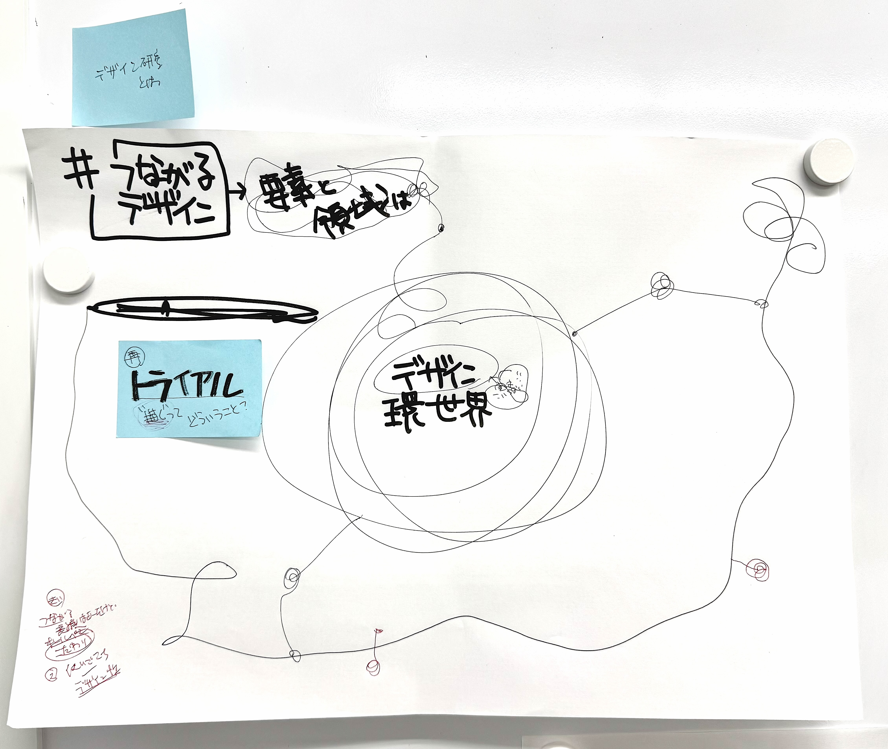
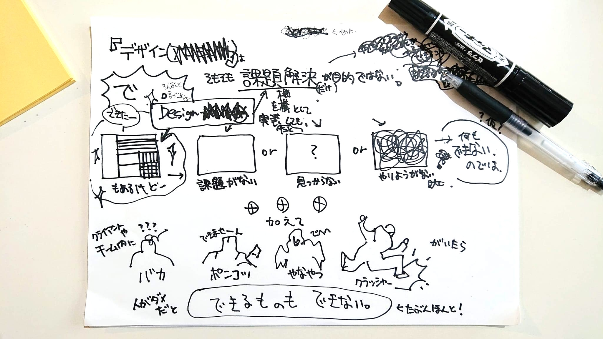
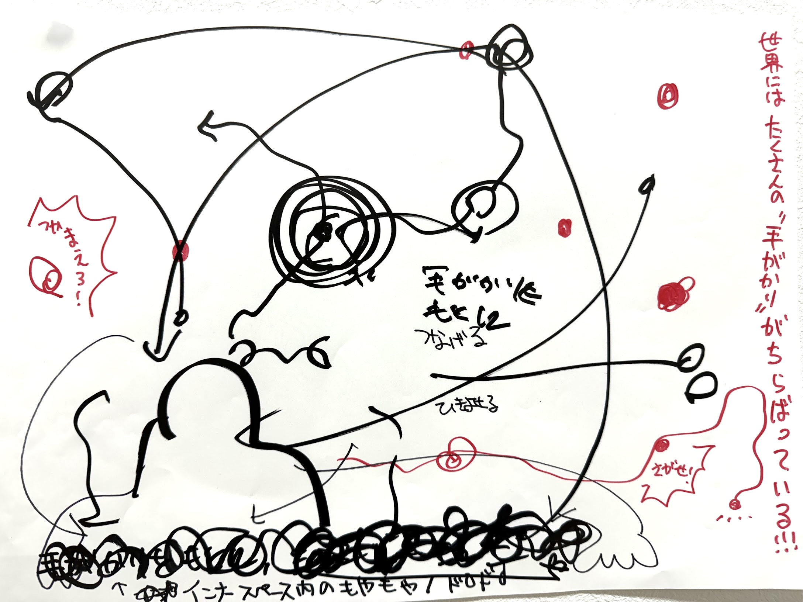
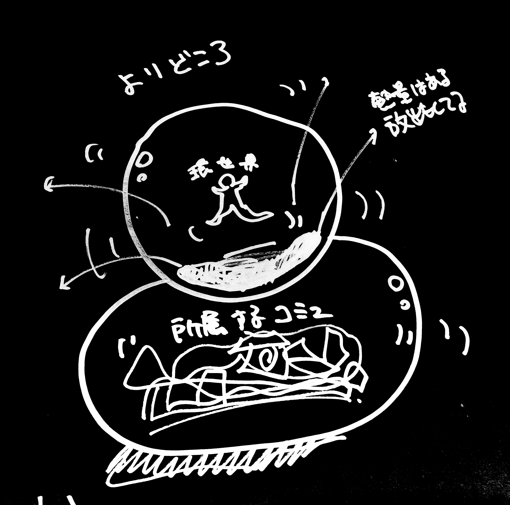

「デザインは人をしあわせにする技術である」——実践と研究を往還しながら、「自分をとりまくデザイン」を構造化、あるいは「できない」を可視化して、自由な場を設計する。
デザイン
環世界
環世界
多種多様な「デザイン」——成果物・サービス・プロセス・コンセプト——がどのような要素を内包し、どのように構成され、どう動いているかを知るための体系モデル「デザイン環世界」を提唱している。
因果関係・時系列・工程などを包括的に把握し、プロジェクトをより効果的に進め、ディスコミュニケーションの発見・修復を可能にする。
デザイン環世界
のイメージ
のイメージ
スカラー的な多次元世界の中に「デザイン要素」が離散的に存在し、デザイン行為によって変容しながら、まるで生態系のように相互に作用し循環している。
デザイン要素
行為・工程・成果物・アイデアなど。行為者（人）もまた、デザイン要素のひとつである。
デザイン行為
個々のデザイン要素のニーズや意味を察知し、干渉することで系の機能や品質を変化させる機構。行為者がそれをデザインと意識するかどうかは問わない。
概念の起点
「Umwelt（Uexküll）」の「生態系」における相互作用と循環のイメージを発想の起点とし、情報デザイン研究部会の「環世界」議論も踏まえ、独自に構築した。
参考：ヤーコプ・フォン・ユクスキュル「生物から見た世界」（岩波文庫）／日本デザイン学会情報デザイン研究部会「環世界」議論
参考：ヤーコプ・フォン・ユクスキュル「生物から見た世界」（岩波文庫）／日本デザイン学会情報デザイン研究部会「環世界」議論
「デザイン環世界」の概念図・アイデアスケッチ
デザイン学研究者・編集者＆ライター・デザイナー・教員・地域コミュニティ実践者・イラストレーターほか、多種多様なステイタスと現場から見た「わたしをとりまくデザイン環世界」



